I let GPT-6 Astra run its own research. It beat Craftax and reached the bottom of NetHack.
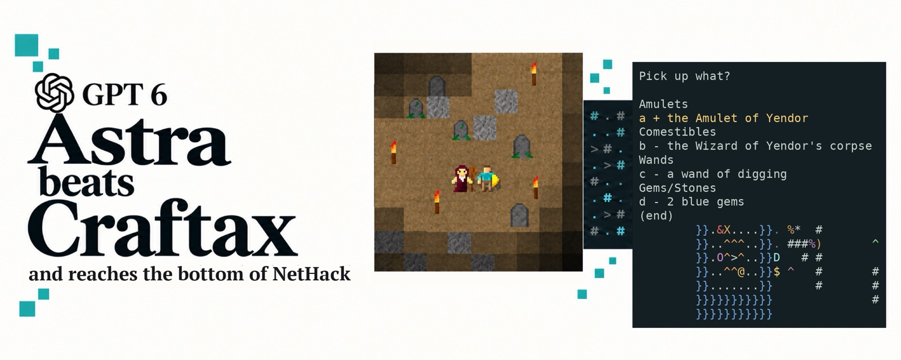
TL;DR For three weeks, GPT-6 Astra did the research. It read its own failed games, rewrote the prompts, tools, and memory of the Astra agents that were playing, and launched new games to test each idea. In Craftax, one of its players defeated the Necromancer after 79 hours and 75 games (video, replay); this is the first time an AI agent has beaten the game. In NetHack, with BALROG's evaluation settings, its best player performed the invocation and entered the Sanctum at the very bottom of the dungeon, before a fake Amulet and the Wizard of Yendor ended its run (video, replay). Ten games went past level 30, and the best score was 80.7% on BALROG's progress metric, against 13.2% for the same model with BALROG's standard agent.
🕹️🏆 The full Craftax win: https://youtu.be/RSarKYf54O8
🕹️⚔️ The Valkyrie's full NetHack game: https://youtu.be/lm9-n5_jEhQ
🔍 Replay every decision of these games: roger-creus.github.io/astra-games
Two games that break agents
Craftax [1] (by @mitrma and colleagues) is a survival game you could think of as "2D Minecraft" merged with a simplified NetHack. It grew out of Crafter [2] (by @danijarh), a procedurally generated open world built to test AI agents. Playing it well takes exploration, memory, and planning far enough ahead that an action's value may only become clear much later. For an agent learning from rewards, working out which earlier decisions deserve credit is a large part of the problem.
Crafter became a popular deep RL benchmark. Then the Craftax authors reimplemented it in JAX, fast enough to train a standard PPO agent for a billion environment steps in under an hour on a single GPU. That agent reached about 90% of the maximum reward. Much of the game's apparent difficulty, it turned out, could be overcome by an existing algorithm once enough experience became affordable (Craftax paper).
So they also built the full game: nine floors, new enemies, magic, equipment, and a final boss, the Necromancer. Here, scale was nowhere near enough. After a billion steps, the original baselines had not reached either of the two hardest achievement categories, and a recurrent PPO agent trained for ten billion steps still failed to enter the Gnomish Mines, the third floor.
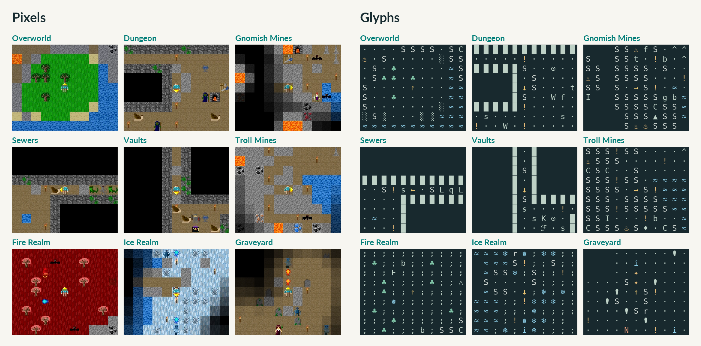
NetHack is where many of those mechanics come from, and it is harder still. First released in 1987, it is a roguelike drawn entirely in text characters: a procedurally generated dungeon about fifty levels deep, hundreds of monsters and items, and one life. To ascend, you have to reach the bottom of Gehennom, the underworld below the main dungeon, take the Amulet of Yendor from the high priest of Moloch, carry it all the way back up, and survive the Elemental Planes. @HeinrichKuttler and @_rockt's "Is it AGI?" flowchart starts with a single question: does it solve NetHack? If not, it is not AGI.
BALROG [3] made NetHack (along with Crafter and a few other games) a standard test for language-model agents. Its NetHack score measures progress towards ascension, based on how deep you get and how experienced your character becomes. The strongest models on its leaderboard score between 7% and 13%.
To me, that is exactly what a useful benchmark should do: expose capabilities we are missing and give us somewhere concrete to develop them.
Why I care
I have been using Craftax for my PhD research almost since it came out. I would often tell fellow PhD students (and even my advisors) "I'm not graduating without getting SOTA in Craftax!" For years, I worked in "classic" deep RL: training task-specific neural networks from scratch, mostly through repeated interaction with an environment. This is the approach behind many of the big successes in Atari, Dota, and other games over the last decade.
I tried better exploration objectives [4, 5, 6], skill discovery and composition [7, 8], better RL optimisation [9], and other fairly fundamental approaches, without making the progress in Craftax I had hoped for. Meanwhile, the growing capabilities of foundation models, especially LLMs, were becoming impossible to ignore. I became much more bullish on building agents around the general knowledge these models already have.
Side note: this is also the idea behind Agentick [11] (recently accepted at the NeurIPS 2026 Evaluations & Datasets track!!), our benchmark for comparing RL, LLM, and VLM agents on the same tasks 😁
First, give the model a good interface
Before any of this, we had been building GlyphBench, a playground for language-model reinforcement learning [10]. It brings more than 360 tasks from nine game families (Atari, MiniGrid, MiniHack, Procgen, Craftax, NetHack, and more) into one interface for evaluating, training, and inspecting LLM agents.
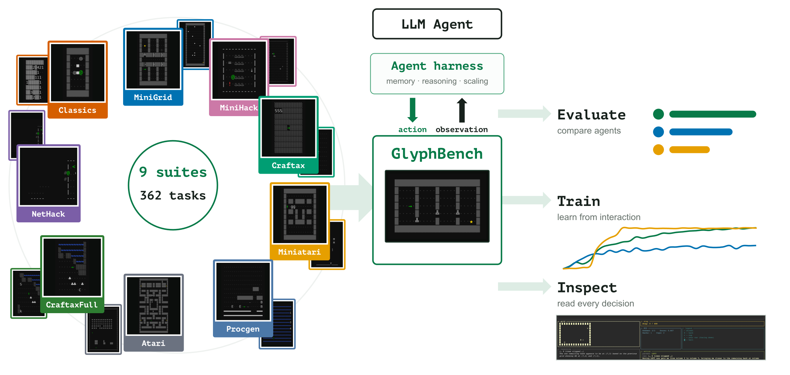
The central idea is simple: show the game as a two-dimensional grid of Unicode characters, with a legend and a status line. Trees, enemies, and ladders sit where they are in the world, so the model can read their spatial relationships directly. NetHack players will recognise the idea: NetHack has always looked like this.
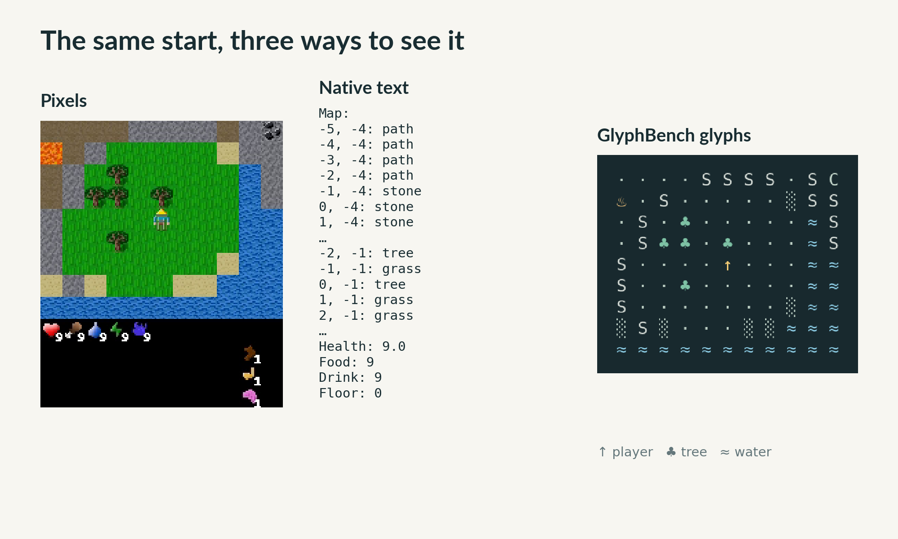
Craftax already has a text renderer, but it describes the surroundings as a list of coordinates. In the paper, we compared the three formats with OpenAI's GPT-5.6 Terra, Luna, and Sol. Glyphs gave the highest reward for all three models. For Sol, glyphs reached 11.4% of the maximum reward, against 3.7% for pixels and 0.3% for the native text. We saw the same pattern for spatial text in Agentick.
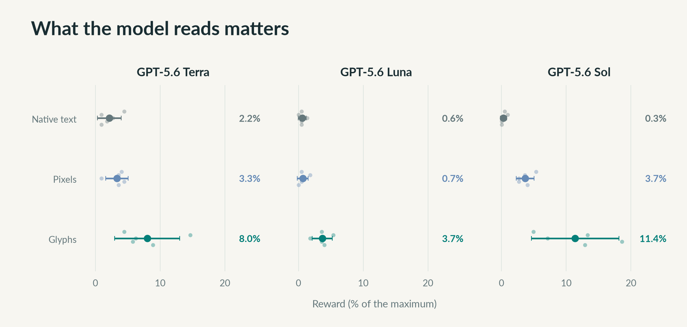
We also compared two harnesses, meaning the prompts, tools, and memory around the model. Basic gives the model the game instructions and the conversation so far. Guided Memory, which I designed by hand, adds an extended game guide, a structured scratchpad, remembered landmarks, an exploration summary, and advice for the current floor. The richer harness only paid off with enough reasoning: at maximum effort, Sol reached 15.8% with Guided Memory, while Basic levelled off near 11%.
Then GPT-6 Astra came out. With Guided Memory at maximum effort, it reached the Vaults, the fifth of Craftax's nine floors, and 51.4% of the maximum reward in a single game. That was the deepest result I had seen in any of my tests, ever.
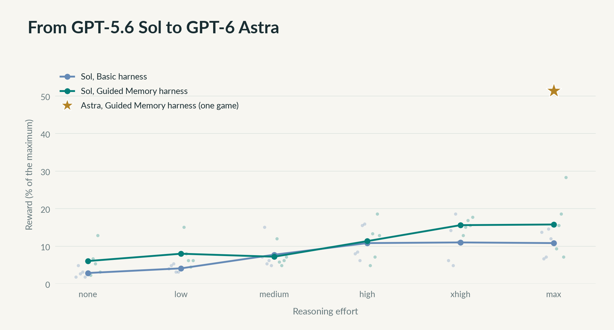
At the time, the strongest result I knew of from training a policy from scratch was a transformer trained with PPO, which had reached the Sewers, one floor above the Vaults. Since then, @daphnesolves and @jsuarez have pushed PPO much further with PufferLib: a well-tuned agent with memory, trained from scratch for 20 billion steps, now reaches the Fire Realm. Their fast C version of Craftax makes a few small observation and reward tweaks to the game; every game in this post runs on the original, unmodified Craftax. Daphne's write-up is excellent, and I will come back to it.
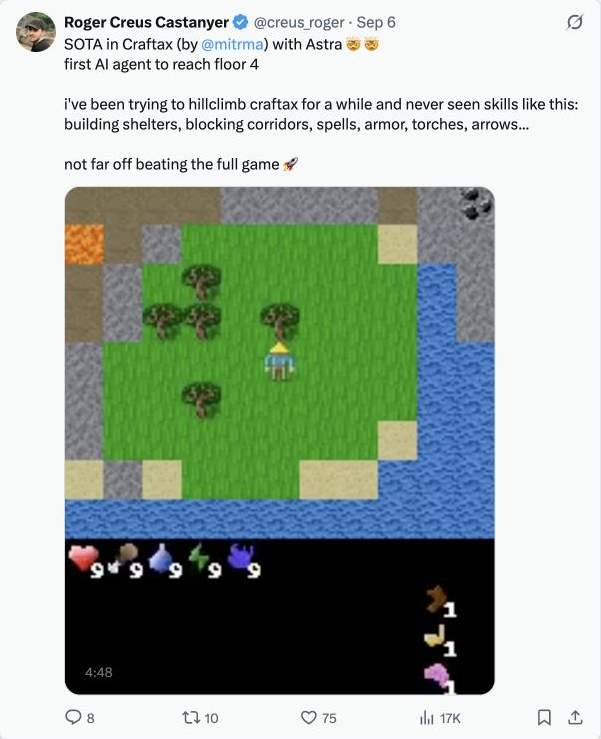
There were still four floors below the Vaults. I wanted to know how much further Astra could go if it could also improve the way it was being asked to play.
Letting Astra do the research
I gave a second Astra, working as a research and coding agent, the code of my Guided Memory harness and the ability to launch new Astra players. It could change the prompts, redesign the tools, restructure the memory, adjust how much the players reasoned, and test whatever it thought would help. After each game, it could read what the player had seen and done, and use that to plan the next experiment. I set the goal and occasionally redirected the priorities. Everything else, from implementation to launching and monitoring games, was Astra's.
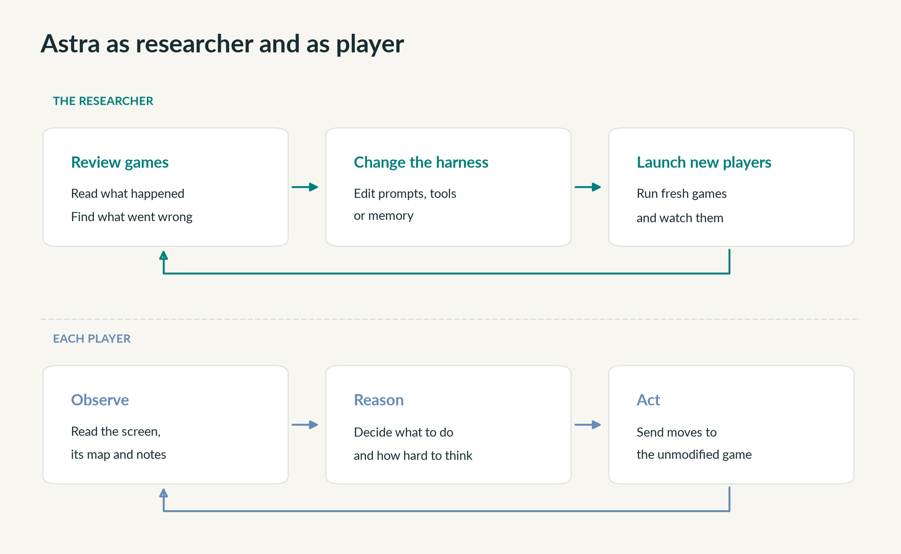
This is what is now often called autoresearch, in the spirit of @karpathy's autoresearch [12]: an agent that runs the experimental loop itself. I had explored a similar loop before in xgenius, which lets a coding agent run experiments on a compute cluster.
The games themselves were never modified: every engine file is identical to the official release, and all changes were on the agent's side. Each player saw the game's normal view (in Craftax, GlyphBench's status line also shows a few conveniences, such as the player's own coordinates). There was no hidden map, no access to the random seed, no search over future game states, no restarting after a death, and no tactical help from me while a game was running. Every completed game is shown below, including the many early deaths.
I ran this loop twice. First on Craftax, for 79 hours. Then on NetHack, for about a week of play so far.
Craftax: from the Vaults to the Necromancer in 79 hours
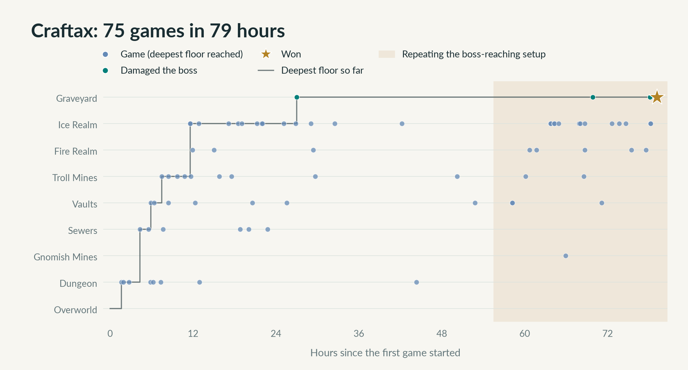
Astra worked fast. In a little over three days it made 390 commits, launched about 50 versions of the harness (each with a written hypothesis), and grew its test suite from 19 tests to 593. It could read the Craftax source code, and it did so constantly to check a rule before writing it into the players' guidance. Most of its ideas came from reading failed games. A few of my favourites:
The mine that wasn't there any more. An early player mined a stone deposit, used it up, and then kept planning to go back to it. Astra gave each player a map built only from what that player had seen, with a ledger of resources it had already used up. The map starts empty in every game.
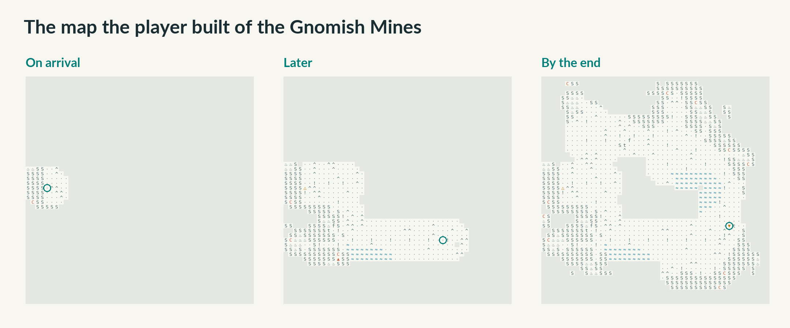
A torch and a fireball looked the same. At 2 health, a player stepped onto what looked like a torch. It was a projectile. Astra traced this to our own glyph renderer, which drew torches and several kinds of projectile with the same symbol. It gave them different symbols and added the last few views to every prompt, the same idea as frame stacking in deep RL: one view shows where something is; a few views show where it is going.
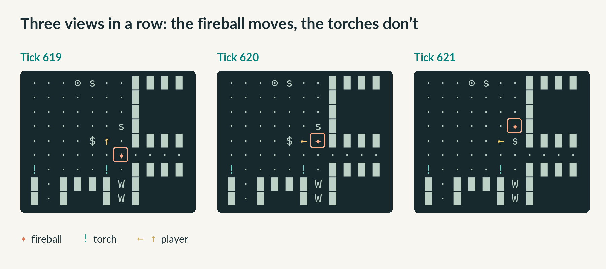
Resting in the open. A player saw no enemies and chose to rest. In Craftax, resting locks you in place until you are healed or hit, and the replay showed ten ticks of enemies approaching without the model getting another decision. The first hit was lethal. Astra considered making rest return early when danger appears, and rejected it because that would mean changing the game engine. It fixed the problem on the agent's side instead, with a new tool (more below).
"I'm already dead." One player, at 0.8 health, saw its health bar display 0 and decided the game was over. It did nothing for six turns until an enemy finished it off. Astra replayed that exact moment offline with one added line: a displayed 0 can still mean you are alive. Both fresh samples switched from doing nothing to running away.
Killing the enemy doesn't save you this turn. A player fired at an enemy and stepped forward, expecting the kill to make the move safe. The enemy died, and so did the player, in the same tick. The source code explained why: enemy attacks resolve before yours. That rule went into version 17, the version that would eventually win.
Preparing when the reward doesn't ask for it. After a player entered the Dungeon wearing a single helmet, Astra added armour accounting and pushed players to gear up first. I find this one particularly interesting. Craftax gives an achievement reward only the first time something happens: your first iron, your first piece of armour. Completing the suit or keeping spare supplies earns nothing new, yet that is often what keeps you alive later. An agent learning from reward has to discover that link across thousands of actions. Astra could already reason about why a full suit of armour would matter.
Astra also redesigned, and coded itself, the way its players act and think. In its very first version, it replaced one-move-at-a-time play with an act tool: the player writes down up to eight moves at once, and the harness plays them one by one, handing control back the moment anything changes, such as an enemy coming into view or health dropping. After the player that died resting in the open, Astra added a wait tool, which passes a few ticks at a time and checks the screen after each one.
In its second version, Astra made thinking adaptive. Its reasoning: thinking at maximum effort on every move wastes time on routine ones. So whenever a player acts, it also chooses how hard to think on its next decision (medium, high or maximum), and a think tool lets it stop and think harder before acting when a situation turns out trickier than expected. No game time passes while it thinks.
Version 17 reached the Necromancer 25 hours in, landed five hits, and died. Then Astra did what many researchers do: it kept adding things. About 30 more versions followed, each motivated by a specific death, and none of them got back to the Graveyard. Its own reflection afterwards was: "More complexity was not sufficient evidence of progress." At hour 55, it stopped adding features and gave version 17 more chances, since it had been tried in only three full games. One of the first eight replays won.
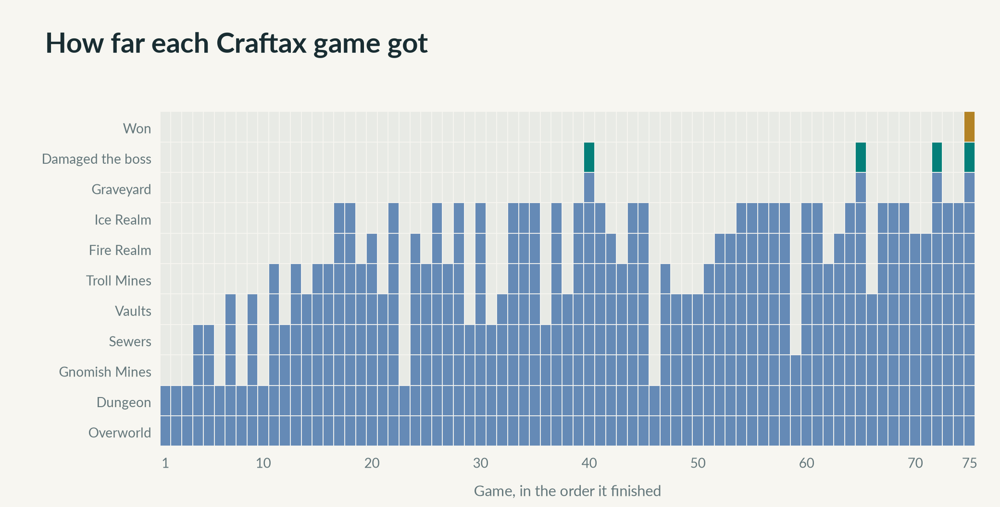
In total, 75 games finished: 74 deaths and one win, for about $2,100 of model usage. The harness alone doesn't explain the win, either. When I later ran the exact winning harness with GPT-5.6 Sol, all three of its games ended in death, none further down than the Troll Mines.
The winning game
The winning player played for almost 24 hours of wall-clock time. It crossed between floors 114 times, including 53 trips back up, and many of those trips were preparation. It enchanted its sword with ice in the Sewers long before reaching the Fire Realm, where it cast 51 iceballs and not a single fireball. After a first look at the Ice Realm, it climbed three floors back to the Vaults to switch its sword to fire, then cast 74 fireballs there and no iceballs.
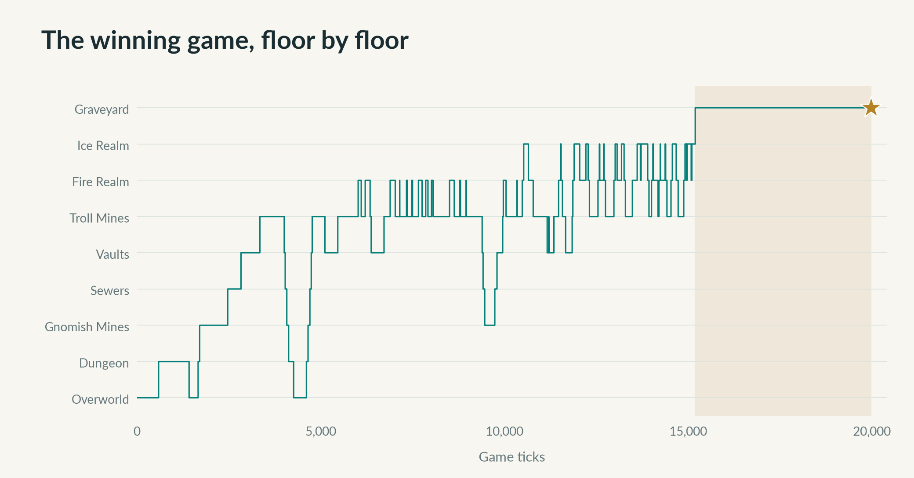
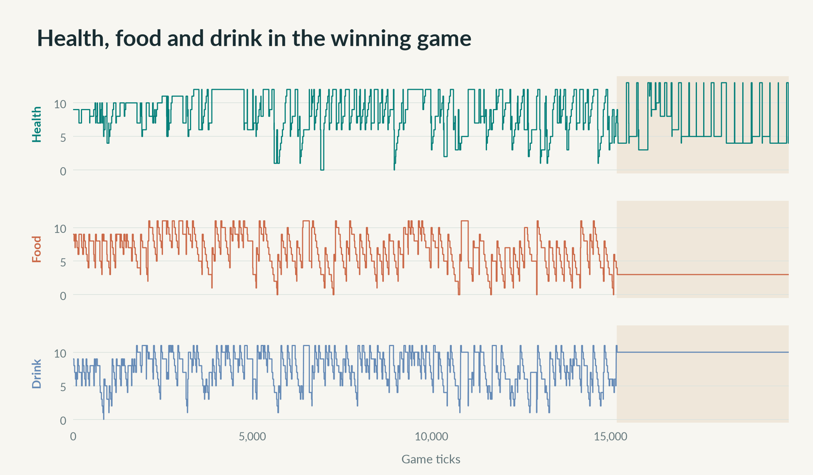
Thanks to Astra's adaptive design, the winning player thought hardest where it mattered: it chose medium effort for 40% of its decisions and maximum for 26%, and those maximum-effort decisions used 83% of the game's 1.66 million reasoning tokens. The Graveyard alone took 38%. On the boss floor, it chose to place stone 51 times, repeatedly walling itself in to recover between waves.
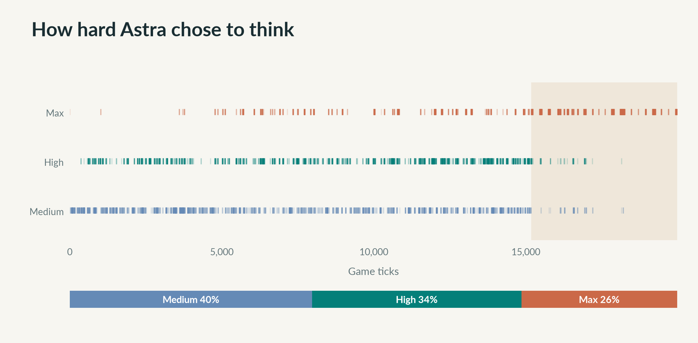
Defeating the Necromancer requires eight hits, with a wave of enemies between each opening. Before the last one, the player's recorded intent was: "Strike the directly faced vulnerable Necromancer exactly once to finish the eighth wave and win." After 19,973 game ticks and 11,351 chosen actions, that hit won the game, with 5.9 health left (replay).
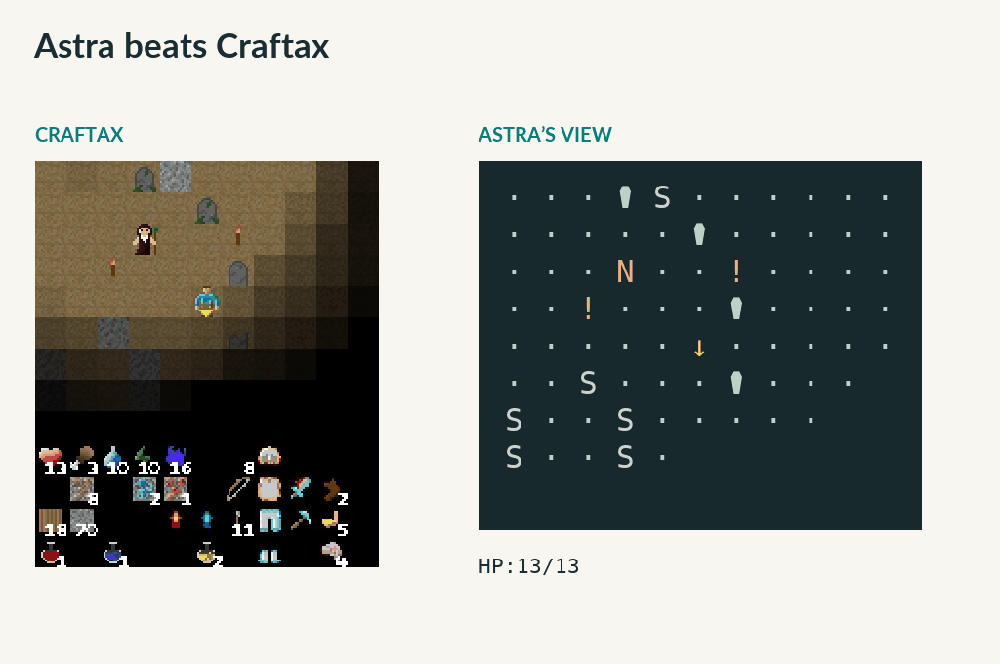
Along the way it unlocked 63 of Craftax's 67 achievements. The four it skipped include collecting a sapling and planting it, two of the easiest achievements in the game. It was playing to win, not to collect points.
Every game happened in a different seed. Nothing specific to any seed was carried between games: every map started empty, and the guidance contained general rules only, with no routes or locations.
NetHack: a week in the dungeon
After Craftax, I asked Astra to run the same programme on NetHack, with one hard constraint: standard evaluation protocols and no modifications to the original challenge environment. That meant the research version of the game (the NetHack Learning Environment [13]), BALROG's settings with a random character every game, and BALROG's own scorer, unmodified. Astra could change anything on the agent side, including giving its players public NetHack knowledge. It could not touch the game or the evaluation.
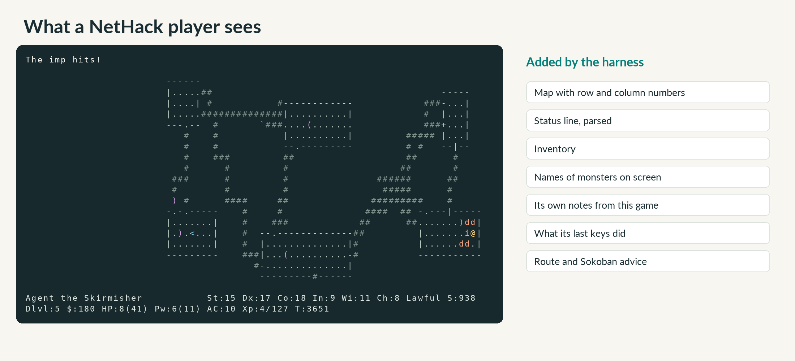
Each turn, the player sees the terminal screen, plus some of it spelled out as text: its coordinates, the names of visible monsters (what NetHack's look command tells a human), its inventory, and its own notes. Some study arms also had helpers that press keys for the player: a navigation tool that walks to a chosen square over terrain the player has seen, a resting tool, and a Sokoban tool that replays a public solution from AutoAscend, the bot that won the 2021 NetHack Challenge [14]. The best completed game used none of them and solved Sokoban on its own; the deepest game still playing uses the navigation tool.
NetHack games are long. The deepest ones have lasted more than 30,000 turns and several days of play, so Astra ran many games in parallel and changed how it did research. Instead of hill-climbing on single games, it declared studies in advance: fixed groups of games for each change, run next to control games on the unchanged harness, with every declared game counted, including the early deaths. Before spending whole games on an idea, it often tested it on the exact moment a previous player had died.
My favourite example: at the Castle, a Barbarian threw a sleeping potion at an adjacent minotaur. It missed, the potion shattered next to the player, the vapours put it to sleep, and the minotaur killed it. Astra wrote a short note on potion vapours from public NetHack knowledge and replayed that exact decision to fresh copies of Astra, ten with the note and ten without. All ten without the note threw the potion again. None of the ten with it did: nine checked the minotaur with a stethoscope first, and one stepped away.
Astra carried its own Craftax design over to NetHack: its players act through a tool it wrote that sends up to eight real NetHack keystrokes and stops as soon as something changes. One thing changed: in later versions, Astra fixed reasoning at maximum effort for every move. A few other things it built from failed games:
- Finishing what it started. In one game, in-game prompts interrupted the player's commands 184 times, and 170 times the next model call just sent the key it had already planned. Astra built a tool that checks for the expected prompt and finishes the command, saving a model call each time.
- Trust, but verify. In NetHack, the word Elbereth written on the floor scares most monsters away, but only while the engraving is intact. Several players wrote it in the dust and then waited beside a monster as if it was protecting them. A troll, a leocrotta and a mumak each killed a player that never looked at what was actually written, and one Ranger's attempts read "Eljereth" and "Albereth". Astra's diagnosis: "the agent treated submitted text as a verified floor inscription". It built a tool that writes the word and then reads the floor to check it, though no full game has used it yet.
- Using what NetHack players already know. Astra turned public NetHack knowledge into short reference cards, each labelled with its public source. In some versions, every monster on screen came with a card saying how fast it moves and how it attacks, taken straight from the game's own monster table. The potion note above was one of these cards, and so was a rule about the floating eye, which can paralyse you if you hit it. Replayed at the moment a player had died fighting one, the rule cut attacks on the eye from seven in ten to none. The players themselves never had web access.
- A notebook for very long games. A game can last 30,000 turns, far more than fits in the model's context, so each player only keeps its last few decisions in view, six at most. Everything else it has to write down: with every move, it rewrites its own notes, up to 6,000 characters that are shown back to it on every turn. The notes start empty in every game, and they read like a veteran's shorthand: where the stairs are, what is still unidentified, what is dangerous nearby, and what to do next.
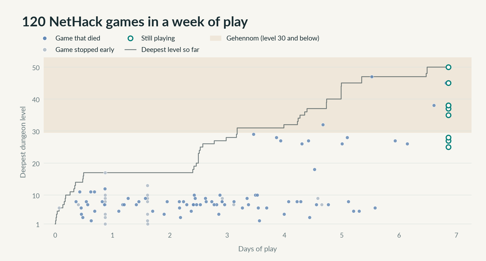
For the first two and a half days of play, no game got past dungeon level 17. Then, as the harness improved, games got much deeper. So far, the players have used about 5.3 billion input tokens, most of them cached, and 280 million output tokens: about $10,700 of model usage. Ten games have now gone past level 30, deep into Gehennom, and four have reached level 45 or deeper. The deepest, still alive as I write, has reached dungeon level 50 at experience level 19.
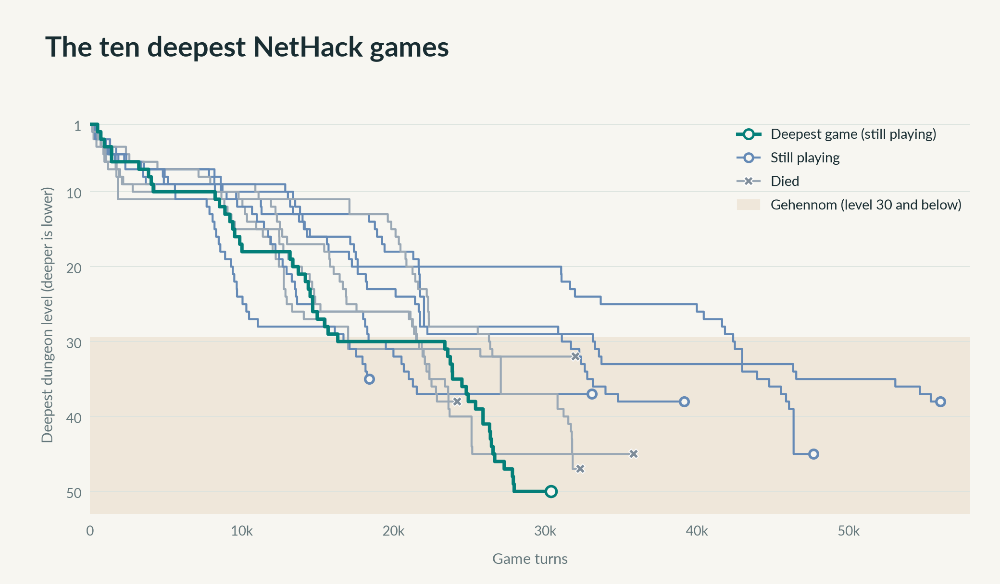
NetHack itself keeps a record of each game's major achievements, so we can see exactly how far the best games got. Among the ten highest-scoring completed games, nine won the Sokoban prize and eight killed Medusa. Six entered Gehennom, and four took the Bell of Opening from their Quest nemesis. Two got the Candelabrum from Vlad the Impaler, and one also took the Book of the Dead and performed the invocation. For comparison, the best RL agents trained from scratch, @finlay_sanders's PufferLib agents from earlier this month, can dive down to Medusa and the Castle but have not killed Medusa yet.
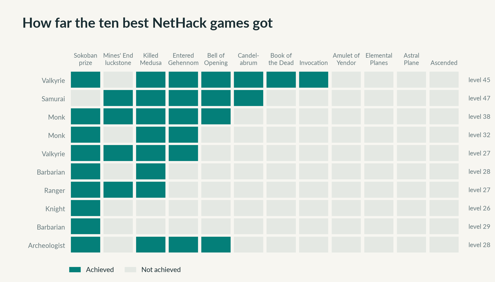
The Valkyrie who almost had it
The closest any game has come to winning was a dwarven Valkyrie with Excalibur and a score of 1.17 million (video). Over about four days of play, it destroyed Vlad the Impaler for his Candelabrum, killed the Wizard of Yendor for the Book of the Dead, and, with the Bell of Opening from its Quest, performed the invocation that opens the way to the bottom of the dungeon. In Moloch's Sanctum, on level 45, it killed the high priestess of Moloch with a wand of death. In that same turn, Dispater, an invisible arch-devil, picked up the Amulet of Yendor she dropped (replay), and soon fled up the stairs.
What happened next is a lesson in memory. The player's notes first recorded that Dispater had the Amulet, then lost that fact, and even that it had killed the high priestess. For about a day and a half of play, they said only that the real Amulet was missing, and the player searched the Sanctum's item piles and boulders. Then, on level 44, it killed the Wizard of Yendor again, and lying with his corpse was the Amulet of Yendor. It picked it up (replay) and started the long climb out, sure it had the real thing. It was a cheap plastic imitation, most likely dropped by a copy the Wizard had made of himself just before. A few hours later, when the Valkyrie turned Dispater to stone with a cockatrice corpse, the real Amulet fell to the floor and the Wizard picked it up. The player saw the message and wrote that the Wizard had grabbed a fake, since the real one was in its own pack. It had it exactly backwards. On level 38, where it never found the way up, the Wizard caught up with it: its teleport scroll was blocked, and his psychic blast killed it.
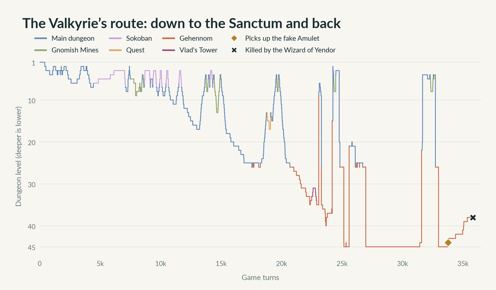
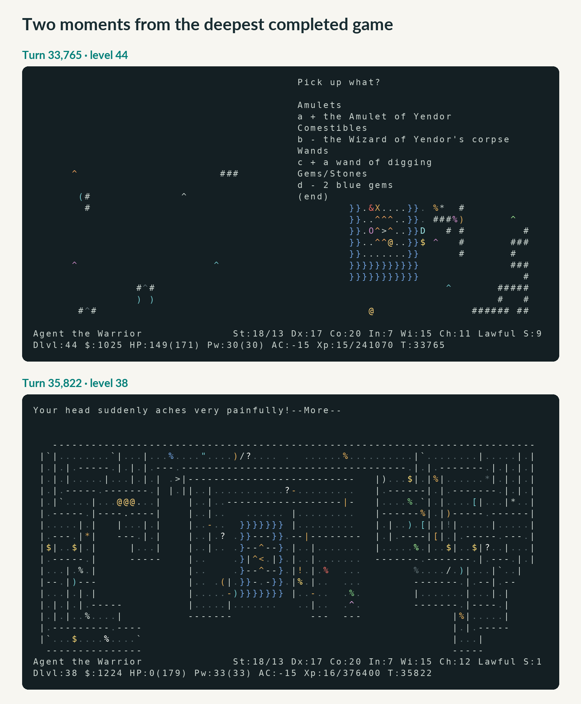
Other games ended in their own memorable ways. A Monk was resting when its Quest nemesis, Master Kaen, attacked; his spells kept blinding it until he killed it. Another Monk, deep in Gehennom, was fighting the demon prince Yeenoghu when two mariliths appeared in a cloud of smoke; its teleport scroll failed, and a marilith finished it off.
My favourite is an elven Ranger that decided it could no longer win, and was right. To win, every character needs the Bell of Opening, one of the three items for the invocation, and it only comes from the character's Quest. At its Quest leader's camp, the Ranger fired a sleep ray at a scorpion. The ray bounced and hit the leader's friendly guards, who turned on it. When it reached the leader, Orion, he declared it an outcast and banished it (replay), and the portal to the Quest closed for good. The Ranger checked the game's dungeon overview, which now read "Sealed portal to The Quest", and concluded that ascending was impossible. So it explored for another 3,500 turns, climbed from level 20 back to the surface, and walked out of the dungeon alive, with three legendary artifacts and 189,806 points.
Most games end much earlier, and NetHack has a way with words: killed by a watch captain, while jumping around; killed by Mr. Brzeg, the shopkeeper, while praying; killed by a chameleon imitating a scorpion; crushed to death by a collapsing drawbridge.
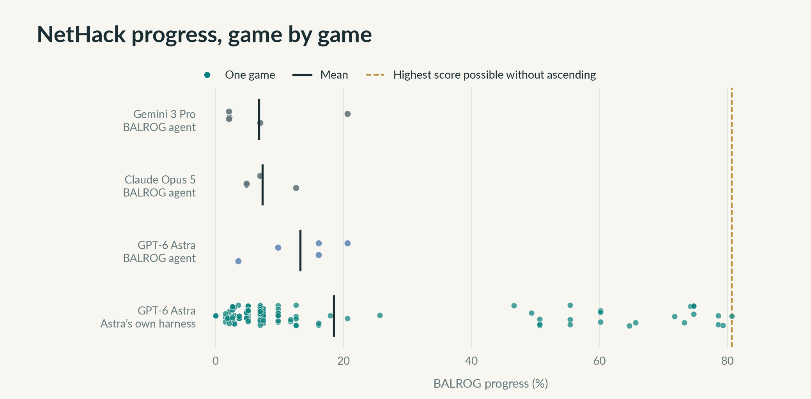
BALROG scores a game by the share of human games that reached the same depth or experience level and went on to win. On its leaderboard, Astra with BALROG's standard agent averages 13.2% over five games, the best of any model. I ran those games myself and added them to the leaderboard:
View the post on X
With the harness Astra built for itself, the median game still dies early, at about 7%, but many go very deep: of the 113 games it has played with BALROG's settings, 21 scored above 50% and ten above 70%, for an average of about 18%. The best games sit at the scorer's ceiling of 80.7%. (While auditing the benchmark, Astra noticed that the scorer never reads its own ascension entry, so even a real win would score 80.7%. A small bug report for @PaglieriDavide 🙂)
It would be wrong to call any of this beating NetHack. Astra has already ascended NetHack, just not in my games. On September 21, Kenny reported what he describes as the first recorded NetHack ascension by an LLM agent: a dwarven Valkyrie played by Astra in NetHack 3.6.7 on the public Hardfought server, where the whole game is recorded, on its third attempt, with a harness Astra built itself. He chose the character, a start many players consider the easiest. Mine are random, though my best game happened to be a dwarven Valkyrie too. His setup differs from mine in ways that cut both ways. By his own account, his player could look things up while playing (the wiki, the web and the source), and the harness kept changing during play. Mine uses the research version of the game with a random character each time, BALROG's scorer, and a frozen harness in every game with no web access, but it has not produced an ascension. In both, the human set things up and paused or resumed games but gave no gameplay advice. The two results point in the same direction.
Same researcher, two different styles
Looking at the two programmes side by side, Astra did not simply repeat itself.
- In Craftax, it hill-climbed. It produced about 50 versions of the harness in three days, usually testing each on one or a few games and moving on as soon as a new death suggested a new fix. That found the rules that mattered quickly, and then ran into noise: a single game says very little about a change. The winning move was to stop changing things and sample the best version more.
- In NetHack, it ran experiments. It declared groups of games in advance, kept control games running on the unchanged harness, counted every game, and tested ideas on the recorded moment of a death before spending new games on them. It audited the benchmark itself, down to the scorer, and refused to claim any improvement that its own comparisons did not support.
- In both, it read the rules. For Craftax, it read the game's source code. For NetHack, it checked its assumptions against the public NetHack source and turned public game knowledge into short references for its players.
- In both, it built the same kind of scaffolding: memory from the player's own observations, short batches of actions that stop when something changes, and more reasoning where it counts.
What I take from this
Looking back at what it took to beat Craftax, I struggle to imagine a small neural network, without the general knowledge an LLM starts with, learning all of these behaviours through reward maximisation alone. Astra could draw on what it knows about the world to understand why it should stockpile resources, wall itself in, prepare for long fights, and return to places it had already visited. Those ideas had to be adapted to the game, but it did not have to discover each of them from scratch.
@daphnesolves's recent analysis shows this. Her tabula rasa PPO agent reaches the Fire Realm and then stalls, because its enemies are immune to fire and resist most physical damage. To get past them, an agent has to discover that ice works where fire fails, possibly by enchanting a weapon several floors earlier, with almost no feedback along the way. She points out that a human player would at least bring some idea of fire and ice to the problem. So does an LLM. Astra read the rule in the source code, wrote it into the guidance, and its winning player did exactly that: it arrived in the Fire Realm with an ice sword and cast only iceballs there. And it did this in the original game: the PufferLib agents train on a slightly tweaked version, and @jsuarez considers further RL progress there saturated without changes to the environment.
I am honestly doubtful that the classic deep RL recipe I had been working with would have produced this full range of behaviour through the kinds of algorithmic and architectural improvements I was trying. Seeing the whole game solved this way made some of my earlier attempts feel hopeless in retrospect. I had spent years trying to build these abilities into agents one at a time: better exploration, skill discovery, skill composition. Astra already had most of them, and what it needed was a good way to put them to work.
The model's weights never changed during any of this. What changed was the harness around it, and Astra decided how: what to investigate, what to build, and where to spend the next round of games. I see this outer research loop as a flexible form of test-time compute scaling, one that turns what a model already knows into an increasingly capable specialist.
NetHack also shows where general knowledge runs out. The Valkyrie knew exactly what to do, all the way to the invocation. What failed was its memory: its notes dropped two things it had seen with its own eyes, that it had killed the high priestess and that Dispater had taken the Amulet, and it never checked the amulet it found. Astra had started building checks like this into its harness, such as reading the floor after writing Elbereth, but none for this.
One thing I cannot tell from outside the frontier labs is how much game-specific training these models have had. NetHack spoilers are all over the internet, and prior exposure to Craftax, its rules, or its code could have helped too, so contamination is worth keeping in mind. The GlyphBench interface was unreleased and built by us, and every Craftax and NetHack game here started from scratch. But none of this rules out that Astra has seen these games before.
When Astra first reached the Necromancer, @mitrma, one of Craftax's authors, wrote: "Wow... not how I expected Craftax to fall". I agree. For me, this is a very concrete illustration of the promise of general intelligence: start with a model that already understands a great deal, then let it specialise through reasoning, tools, and experimentation. That now looks much more promising to me than building each specialist from scratch, and at the pace frontier models are improving, I doubt that gap is about to close.
As I write this, nine NetHack games are still alive. Anyhow, ascension next!
Thanks to @Cote_Marc, @pcastr, @GlenBerseth, @MavorParker, @matthewjsargent, and @VmaxAI for their help throughout, with both GlyphBench and this article.
GlyphBench paper: arxiv.org/abs/2609.34214 · code: github.com/VmaxAI/glyphbench · Agentick (NeurIPS 2026): arxiv.org/abs/2605.06869
References
- Matthews, Michael, et al. "Craftax: A Lightning-Fast Benchmark for Open-Ended Reinforcement Learning." International Conference on Machine Learning (2024).
- Hafner, Danijar. "Benchmarking the Spectrum of Agent Capabilities." International Conference on Learning Representations (2022).
- Paglieri, Davide, et al. "BALROG: Benchmarking Agentic LLM and VLM Reasoning On Games." International Conference on Learning Representations (2025).
- Yuan, Mingqi, et al. "RLeXplore: Accelerating Research in Intrinsically-Motivated Reinforcement Learning." Transactions on Machine Learning Research (2025).
- Creus Castanyer, Roger, Joshua Romoff, and Glen Berseth. "Improving Intrinsic Exploration by Creating Stationary Objectives." International Conference on Learning Representations (2024).
- Hugessen, Adriana, et al. "Surprise-Adaptive Intrinsic Motivation for Unsupervised Reinforcement Learning." Reinforcement Learning Journal 2 (2024).
- Creus Castanyer, Roger, et al. "ARM-FM: Automated Reward Machines via Foundation Models for Compositional Reinforcement Learning." International Conference on Learning Representations (2026).
- Nieto, Juan José, Roger Creus, and Xavier Giro-i-Nieto. "Unsupervised Skill-Discovery and Skill-Learning in Minecraft." ICML 2021 Workshop on Unsupervised Reinforcement Learning (2021).
- Creus Castanyer, Roger, et al. "Stable Gradients for Stable Learning at Scale in Deep Reinforcement Learning." Advances in Neural Information Processing Systems 38 (2025).
- Creus Castanyer, Roger, et al. "GlyphBench: A Playground for Language-Model Reinforcement Learning." arXiv preprint arXiv:2609.34214 (2026).
- Creus Castanyer, Roger, Pablo Samuel Castro, and Glen Berseth. "Agentick: A Unified Benchmark for General Sequential Decision-Making Agents." Advances in Neural Information Processing Systems 39, Evaluations & Datasets Track (2026).
- Karpathy, Andrej. "autoresearch." GitHub repository (2026).
- Küttler, Heinrich, et al. "The NetHack Learning Environment." Advances in Neural Information Processing Systems 33 (2020).
- Hambro, Eric, et al. "Insights From the NeurIPS 2021 NetHack Challenge." Proceedings of the NeurIPS 2021 Competitions and Demonstrations Track, PMLR 176 (2022).